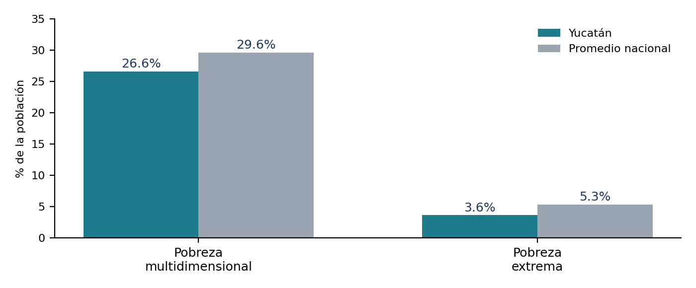
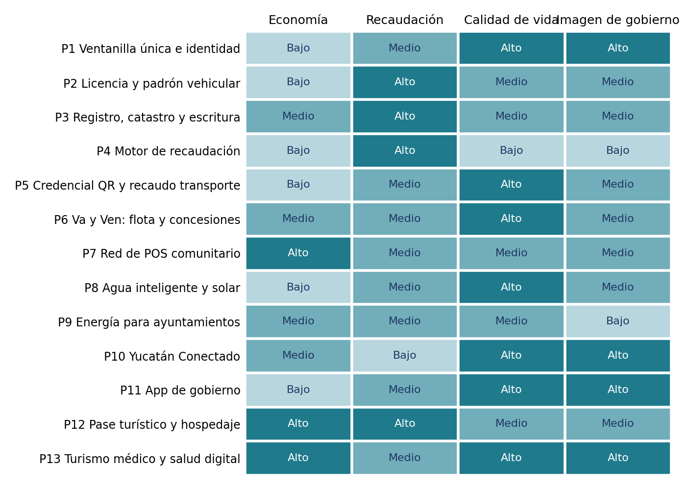

Yucatán Digital y Próspero
Estudio de oportunidades y portafolio de proyectos tecnológicos, de recaudación, movilidad, turismo, salud y servicios para el Gobierno del Estado de Yucatán
Resumen Ejecutivo
Fortalezas poco comunes y retos que la tecnología puede atender
| Fortalezas | Retos concretos |
|---|---|
| Pobreza multidimensional 26.6% (debajo del nacional 29.6%) y extrema 3.6% [17] · Calificación AA-.mx estable [4] · Impuestos estatales +19% (1er semestre 2026) [3] · 2.6M turistas en 2025, meta 2.7M [23] · Plan «Renacimiento Maya 2024-2030» con 87% de compromisos iniciados o presupuestados [15] | Pobreza rural 35.2% vs. urbana 25.1% [17]; conectividad más débil en el interior [12] · Va y Ven creció 40% pero con tensiones financieras [5][6] · Más de 12 mil alojamientos digitales sin regulación plena [14] · Turismo médico sin coordinación, datos ni certificaciones para competir con Cancún, Monterrey o Guadalajara [18][25] |
| Frente | Proyectos incluidos |
|---|---|
| Gobierno digital y recaudación | Ventanilla única (P1), licencia y padrón vehicular digital (P2), registro público, catastro y escritura digital (P3), motor de recaudación (P4) y app de gobierno (P11) |
| Movilidad | Credencial QR y recaudo electrónico (P5) y Va y Ven con verificación de kilómetros, flota y concesiones complementarias (P6) |
| Economía local y pagos | Red de POS comunitario en tortillerías y abarrotes, con proveeduría local y crédito (P7) |
| Servicios básicos y energía | Agua inteligente con energía solar para bombeo (P8), financiamiento energético a ayuntamientos (P9) y conectividad pública en el interior (P10) |
| Turismo y salud | Pase turístico y registro de hospedaje (P12) y Yucatán Health Hub: turismo médico con telemedicina y salud digital para el interior (P13) |
| Principio / Lineamiento | Detalle |
|---|---|
| Financiamiento por comisión y ahorro | Los equipos y plataformas no representan gasto inicial para el estado |
| Transición gradual | Efectivo y atención asistida mientras crece la adopción digital |
| Medición desde el inicio | Línea base e indicadores públicos para cada proyecto |
| Soberanía de datos | Los datos de la ciudadanía permanecen bajo control del Estado y en territorio nacional |
| Interoperabilidad | Interfaces documentadas con los sistemas de AAFY, SSP, ATY, INSEJUPY y municipios |
| Seguridad por diseño | Cifrado, auditoría y pruebas de penetración desde la arquitectura |
| Transferencia de conocimiento | Capacitación al personal estatal y a las universidades locales para evitar dependencia tecnológica |
| 1 | Revisión del contexto político e institucional |
| 2 | Diagnóstico de condiciones sociales, económicas y fiscales |
| 3 | Revisión del marco normativo y de las plataformas ya existentes en el estado, para complementarlas y no duplicarlas |
| 4 | Construcción de un portafolio con su lógica económica, modelo de contratación y hoja de ruta |
Diagnóstico del Estado
Contexto institucional, social, económico, fiscal y marco habilitador
| Elemento | Detalle |
|---|---|
| Periodo de gobierno | Lic. Joaquín Jesús Díaz Mena: gobierna desde el 1 de octubre de 2024, concluye en 2030 (ventana de ejecución de poco menos de cuatro años) [1][15] |
| Cobertura | Ha recorrido los 106 municipios; Plan Estatal de Desarrollo «Renacimiento Maya 2024-2030»; Primer Informe en enero de 2026 |
| Proyectos estratégicos | Ampliación del Puerto de Altura de Progreso y Tren de Carga Poxilá–Progreso |
| Agenda digital | Digitalización de procesos y formación de un ecosistema tecnológico con jóvenes como parte de la agenda pública [10b] |
| Indicador | Valor | Referencia |
|---|---|---|
| Pobreza multidimensional (INEGI 2024) | 26.6% | Debajo del promedio nacional (29.6%) [17] |
| Pobreza extrema | 3.6% | Por debajo del nacional (5.3%) [17] |
| Desigualdad territorial | Rural 35.2% vs. urbana 25.1% | Las soluciones deben diseñarse con acceso asistido, atención en maya yucateco, celular básico y puntos de atención en el comercio de barrio [17] |
| Turismo (motor central) | 2.6M turistas en 2025; meta 2.7M en 2026 | 11,566 mdp de inversión turística captada desde el inicio de la administración a septiembre de 2026 [23][24] |
| Procedencia del turismo internacional | Norteamérica 49.7% | EE.UU. 40.2% y Canadá 9.5%, según Simty [21] |

| Elemento | Detalle |
|---|---|
| Avance existente | Digitalización de procesos reportada [10b]; AAFY opera tableros de control en tiempo real [3]; INSEJUPY ofrece plataformas digitales y un Módulo de Notaría Digital [10]; el programa Yucatán Digital conecta escuelas, oficinas y centros de salud [12] |
| Licencias | Se tramitan en módulos de la SSP, con exenciones y descuentos del Decreto 143/2025 que requieren acreditación documental [9]; costos 2026 de chofer: $950, $1,494 y $2,580 pesos (2, 3 y 5 años) |
| Registro Público y Catastro | INSEJUPY reporta 1,666,764 predios con folio electrónico, unos 395 mil trámites anuales y cartografía digital de 41,137 km² [10]; oportunidad en actualización permanente, apoyo a municipios y protección patrimonial |
| Pendiente | Confirmar con cada dependencia qué trámites ya son 100% digitales y cuáles siguen siendo presenciales, para definir el piloto de la ventanilla única |
| Dato | Detalle |
|---|---|
| Ley de Ingresos 2026 | Ingresos totales estimados por 66,408 mdp; recaudación de ingresos fiscales locales 8,180 mdp [2] |
| Avance 2026 | AAFY reporta un aumento superior a 19% en la recaudación de impuestos estatales durante el primer semestre [3] |
| Ingresos propios | Moody's Local estima que representen en promedio 25.7% de los ingresos operativos en 2026-2027 [4] |
| Pendiente | Serie histórica de ingresos propios por concepto con la Secretaría de Administración y Finanzas, para calibrar el potencial de cada proyecto |
| Punto | Detalle |
|---|---|
| Crecimiento | De 265,194 pasajeros diarios en 2024 a 372,638 en 2025 (+40%); cubre 81% de Mérida y su zona metropolitana [5] |
| Marco nuevo | Decreto 187/2026, vigente desde el 26 de mayo: sustituye el pago por «kilómetro garantizado» por el pago de kilómetros efectivamente recorridos y reorganiza la ATY [5] |
| Tensiones | Junio 2026: adeudo reportado de 189 mdp, reducciones temporales de flota y un paro de operadores; el servicio se restableció tras mesas de diálogo [6][7] |
| Rural | En zonas rurales, los mototaxis son con frecuencia el único medio disponible [8] |
| Pendiente | Confirmar con ATY el sistema de cobro actual del pasaje y el estado de los equipos a bordo |
| Punto | Detalle |
|---|---|
| Hospedaje | Más de 12 mil alojamientos operan en plataformas digitales sin regulación plena; el Gobierno trabaja en su regulación; el Impuesto sobre Hospedaje es de 4.5% en 2026 [14] |
| Turismo médico · activos | Mérida cuenta con hospitales privados de alta especialidad, un clúster médico y un portal oficial de promoción (Yucatán Healthcare) [19][20]; especialidades más demandadas por pacientes extranjeros: implantes dentales, cirugía maxilofacial, cirugía estética y reconstructiva, y cardiología invasiva [19]; el aeropuerto de Mérida tiene vuelos directos con Miami, Dallas, Houston y Orlando, más tres rutas canadienses en la temporada de invierno 2026-2027, entre ellas Toronto–Mérida con Air Canada a partir del 21 de noviembre [21][22] |
| Turismo médico · brechas | Escasez de personal bilingüe y de facilitadores; falta de certificación internacional hospitalaria (Joint Commission) que permita usar seguros extranjeros — Cancún tenía dos de los siete hospitales acreditados, y en Mérida los hospitales declararon su intención de obtenerla; hospedaje poco adaptado a pacientes [18][20]; falta de regulación y recolección de datos a nivel nacional [25] |
| 3.7 Conectividad | 84.3% de la población de seis años o más usó internet en 2025 (nacional 86.1%) [11]; Yucatán Digital conectó con fibra a más de 2,100 escuelas (73%) [12]; Mérida reporta 240 puntos de WiFi gratuito [13]; brecha marcada entre la capital y el interior [12]; la brecha de calidad pesa más que la de cobertura [16] |
| 3.8 Agua y energía | El agua potable es un derecho humano con mínimo vital garantizado; Yucatán depende de un acuífero kárstico, vulnerable a la contaminación y a las fugas, lo que hace especialmente valiosa la medición y el control de pérdidas; el consumo eléctrico del bombeo es uno de los mayores gastos de los organismos (dato a validar con JAPAY y municipios) |
| 3.9 Seguridad | Yucatán mantiene niveles de seguridad que el propio Gobierno destaca como activo del estado [15]; favorece la inversión turística y el turismo médico; toda operación en campo debe planearse con protocolos y coordinación institucional |
| 3.10 Marco federal 2026 | Reforma a las reglas del SPEI, impulso a CoDi, pagos digitales obligatorios en ciertos sectores e iniciativa de Ley de Economía Digital para Pagos Digitales y Electrónicos (Paquete Económico 2027), que obligaría a los tres órdenes de gobierno a recibir pagos digitales — aún es una iniciativa; los datos de uso de efectivo de otros estados NO son extrapolables a Yucatán: se requiere una medición local (Banxico, ENIF) |
Portafolio de Proyectos P1 – P13
Fichas completas organizadas por frente: problema, solución, componentes, impactos, modelo, inversión, piloto, indicadores y riesgos
Gobierno Digital y Recaudación
Ventanilla única, identidad digital, catastro y motor fiscal
Movilidad y Transporte
Recaudo electrónico y sostenibilidad del Va y Ven
Economía Local y Pagos
Inclusión financiera desde la tienda de barrio
Servicios Básicos y Energía
Agua, energía y conectividad para todos los municipios
Turismo y Salud
Pase turístico, hospedaje regulado y hub de salud verificado
Mapa de Oportunidades
Contribución de cada proyecto a los cuatro objetivos (valoración cualitativa, sujeta a validación)

| Proyecto | Impacto en ingresos | Impacto ciudadano | Complejidad | Primer resultado | Inversión del Estado |
|---|---|---|---|---|---|
| P1 Ventanilla | Medio | Alto | Media | 3 meses | Media |
| P2 Licencia y padrón | Medio a alto | Alto | Media | 3 meses | Baja a media |
| P3 Registro y catastro | Alto (mediano plazo) | Medio | Alta | 6 meses | Media a alta |
| P4 Motor de recaudación | Alto | Medio | Media | 3 a 4 meses | Media |
| P5 Credencial QR | Medio | Alto | Media | 4 a 6 meses | Baja a media |
| P6 Va y Ven | Medio | Alto | Alta | 4 meses (telemetría) | Baja a alta |
| P7 POS comunitario | Medio | Alto | Media | 4 a 6 meses | Baja a media |
| P8 Agua y solar | Medio | Alto | Alta | 6 a 9 meses | Media a alta |
| P9 Energía municipal | Medio | Medio | Media | 6 a 12 meses | Media |
| P10 Yucatán Conectado | Bajo | Alto | Media | 4 meses | Nula o baja |
| P11 App de gobierno | Medio | Alto | Media | 3 meses | Media |
| P12 Pase y hospedaje | Medio a alto | Medio | Media | 4 meses | Media |
| P13 Health Hub | Alto (económico) | Alto | Media | 4 a 6 meses | Media |
Palancas de Recaudación y Lógica Económica
Cuatro mecanismos para aumentar la recaudación propia, sin nuevos impuestos
| Palanca | Qué cambia | Proyectos |
|---|---|---|
| Ampliar la base | Detectar y regularizar contribuyentes omisos con cruce de padrones y una ruta de formalización gradual para micronegocios y hospedaje | P3, P4, P7, P12 |
| Elevar el cumplimiento | Pago fácil por QR, recordatorios, puntos de pago de barrio y cobro en línea de derechos, refrendos y multas | P1, P2, P4, P7, P11 |
| Reducir costo y fuga | Menos efectivo, menos intermediación; recibos de luz más bajos con solar y LED; pérdidas de agua menores | P1, P2, P5, P8, P9 |
| Crear ingresos por servicios y concesiones | Derechos de concesión, comisiones privadas, servicios registrales y catastrales, pase turístico, turismo médico y ahorro compartido | P3, P5, P6, P7, P8, P12, P13 |
| Escenario | Mejora sobre la base digitalizada | Equivalencia sobre 8,180 mdp | Lectura |
|---|---|---|---|
| Conservador | +3% | ≈ 245 mdp anuales | Solo mejora de cobro y menor fuga en trámites digitalizados |
| Base | +6% | ≈ 491 mdp anuales | Incluye regularización de omisos y puntos de pago de barrio |
| Ambicioso | +10% | ≈ 818 mdp anuales | Suma formalización, concesiones nuevas y registro y catastro actualizados |
| Como el equipo se entrega sin costo y se financia con comisiones, la clave es el volumen de operaciones por comercio. Con un supuesto ilustrativo de 50 centavos de comisión por operación y 30 días por mes, un equipo de 2,500 pesos se recupera en unos 4 meses con 40 operaciones diarias y en más de 11 meses con 15 operaciones diarias. |
| Por eso se recomienda entregar el equipo en comodato con un mínimo mensual de operaciones, la posibilidad de retirarlo si no se usa, y empezar por las zonas de mayor tráfico. Los supuestos deben reemplazarse con cifras reales de comisión y costo de equipo. |
Esquemas de Contratación y Marco Jurídico
La modalidad se elige proyecto por proyecto con revisión de la Consejería Jurídica
| Modalidad | Cuándo conviene | Consideraciones |
|---|---|---|
| Contrato de servicios / licenciamiento (SaaS) | Ventanilla, app de gobierno, licencia digital, motor fiscal | Rápida implementación; costo predecible; resguardar la propiedad de los datos para el Estado |
| Comisión privada por operación | Red de POS, recaudo de transporte, pase turístico, plataforma de turismo médico | No genera gasto al gobierno; requiere convenio, reglas de tarifas y niveles de servicio |
| Ahorro compartido o arrendamiento | Solar para bombas, luminarias, medidores | El pago depende del ahorro verificado; requiere línea base y auditoría independiente |
| Concesión o asociación público-privada | Recaudo electrónico, estacionamiento, publicidad, WiFi público, plataforma de salud | Requiere estudio de viabilidad, procedimiento y revisión de la ley estatal aplicable |
| Crédito con banca aliada | Capital de trabajo a comercios, financiamiento a ayuntamientos y concesionarios | Revisar reglas de deuda pública municipal y de operación bancaria |
| Constitución Política del Estado de Yucatán, normativa de firma electrónica y de gobierno digital, y atribuciones de la Subsecretaría de TIC |
| Ley de Transporte del Estado (incluidas las reformas de 2026 y el Decreto 187/2026), concesiones, tarifas y plataformas |
| Código Fiscal y Ley General de Hacienda del Estado, Ley de Ingresos y convenios de colaboración administrativa en materia fiscal federal |
| Normativa registral y catastral, Ley que crea el INSEJUPY, Ley del Catastro y normativa notarial |
| Ley de Turismo del Estado y la reforma en curso sobre plataformas de hospedaje |
| Normativa sanitaria federal y estatal aplicable a establecimientos de salud, publicidad de servicios médicos, telemedicina y expediente clínico electrónico (Ley General de Salud, COFEPRIS y normas oficiales aplicables) |
| Marco de agua potable (derecho humano) y normativa de los organismos operadores |
| Normativa financiera de pagos, corresponsales y comisiones; operar con un banco aliado que sea titular de los fondos |
| Reglas de deuda pública y financiamiento municipal (Ley de Disciplina Financiera de las Entidades Federativas y los Municipios y normativa estatal) |
| Telecomunicaciones y espectro (WiFi público), y marco federal de pagos digitales a vigilar durante el trámite legislativo |
| Leyes de adquisiciones, obra pública y asociaciones público-privadas, transparencia y protección de datos personales |
| Se recomienda que la Consejería Jurídica o un despacho local confirme el esquema de cada proyecto antes de la presentación formal. Los trámites de licencias y autorizaciones se gestionan con cada autoridad competente. |
Riesgos y Mitigación
Cada riesgo identificado tiene una mitigación concreta
| Riesgo | Descripción | Mitigación |
|---|---|---|
| Jurídico | Esquemas de pago por resultados en materia fiscal; valor legal de credenciales digitales; concesiones y APP; uso de seguros extranjeros | Revisión previa con Consejería Jurídica; pilotos bajo figuras ya contempladas en la normativa |
| Político y social | Sensibilidad en transporte y fiscalización; percepción de más control o de privatización | Comunicación centrada en facilitación y transparencia; participación de concesionarios, cámaras y sociedad civil |
| Datos | Calidad desigual de padrones; fragmentación entre dependencias | Fase 0 de depuración; gobierno de datos con responsable por dependencia |
| Seguridad de la información | Ataques cibernéticos, filtraciones o uso indebido de datos fiscales y clínicos | Arquitectura segura, auditorías externas, cifrado y accesos mínimos |
| Sanitario y reputacional | Mala práctica o publicidad engañosa en turismo médico que dañe la imagen del estado | Sello de verificación, seguros de complicaciones, supervisión sanitaria y retiro del sello ante quejas |
| Equidad en salud | Que el turismo médico desplace la atención a la población local | Convenio de reinversión parcial en salud pública; telemedicina para el interior; indicadores de acceso local |
| Adopción | Brecha digital y resistencia al cambio | Canal presencial se mantiene; capacitación; acompañamiento en municipios |
| Financiero | Expectativas de recaudación o de pacientes no alcanzadas; ingresos publicitarios menores a lo previsto | Pilotos con línea base, metas conservadoras y reportes periódicos |
| Dependencia externa | Rutas aéreas, plataformas, proveedores o tecnología de terceros | Arquitectura abierta, cláusula de salida ordenada y proveedores alternos |
Valor Político y Plan de Acercamiento
Resultados visibles, medibles y comunicables, con una ruta clara para iniciar
Sin Nuevos Impuestos
El aumento de recaudación proviene de mejor cumplimiento, menos fuga y nuevos servicios, no de mayores tasas
Cercanía con el Pueblo
La ventanilla, la app, el WiFi y la telemedicina llevan la cercanía al día a día, con atención en maya yucateco en los 106 municipios
Orden y Transparencia
Registro de hospedaje, conciliación del transporte, sello de turismo médico y alertas patrimoniales dan reglas claras y reducen discrecionalidad
Estado Innovador
Yucatán puede ser el primer estado con un hub de salud verificado y una ventanilla única con identidad digital
Resultados en el Periodo
Los pilotos de 100 días permiten mostrar avances antes del cierre de 2027 y escalar con evidencia
| Actor | Proyectos | Interés probable |
|---|---|---|
| Secretaría de Administración y Finanzas y AAFY | P1, P2, P4, P7, P12 | Recaudación, tableros, cobranza, cumplimiento |
| SSP | P2 | Licencias, padrón y verificación en campo |
| ATY y concesionarios | P5, P6 | Conciliación, pagos oportunos, flota y concesiones |
| INSEJUPY y municipios | P3, P8, P9 | Catastro, registro, predial y servicios municipales |
| Sefotur y clúster médico | P12, P13 | Turismo, hospedaje, turismo médico, datos de destino |
| Secretaría de Salud e IMSS-Bienestar | P13 | Telemedicina, abasto y atención en el interior |
| Subsecretaría de TIC | P1, P10, P11 | Interoperabilidad, conectividad, gobierno digital |
| Consejería Jurídica | Todos | Viabilidad legal de esquemas |
Socio Estratégico: Grupo CSI
Capacidades que el gobierno suele exigir antes de contratar
| Grupo CSI se presenta como una empresa de identidad digital, contact center y software para banca y gobierno, que opera mediante tres unidades (ART, Inovitz y Buzzword) y ofrece verificación de identidad, contact center omnicanal, fábrica de software, mesa de ayuda y gestión documental (según su perfil corporativo). Su perfil complementa al equipo proponente en tres frentes que el gobierno suele exigir antes de contratar: capacidad operativa a escala, experiencia con instituciones reguladas y respaldo corporativo. |
| Capacidad | Proyectos donde aporta | Qué resuelve |
|---|---|---|
| Verificación de identidad | P1, P2, P3, P7, P12 | Altas confiables en padrones (licencias, predios, comercios, hospedajes) y firma de escrituras; menos fraude documental |
| Contact center omnicanal | P11, P1, P7 | Agentes y plataformas para la app de gobierno, la ventanilla única y la atención a comerciantes y usuarios |
| Fábrica de software | P5, P6, P10 | Integraciones con los sistemas de AAFY, SSP, ATY, INSEJUPY y los sistemas municipales |
| Mesa de ayuda | Todos | Soporte a usuarios internos del Estado, notarios, tenderos y cuadrillas de campo |
| Gestión documental | P2, P3 | Digitalización de expedientes notariales y de los acervos registrales y catastrales (INSEJUPY) |
| Relación con banca | P7, P9, P6 | Banco aliado para la red de pagos, crédito para ayuntamientos y financiamiento de flota |
| Antes de presentar a Grupo CSI como socio formal conviene confirmar con la empresa sus referencias en gobierno, certificaciones de seguridad de la información y capacidad de coinversión, en particular para P6 (flota) y P8/P9 (agua y energía). |
Glosario de Términos
Cada término tiene un enlace para ir al contexto donde se usa en la propuesta
POS (Punto de Venta)
Ver contextoTerminal o equipo para cobrar pagos digitales (tarjeta, QR). En esta propuesta son puntos de servicio en abarrotes y tortillerías, gratuitos para el comercio y financiados con comisiones centavo a centavo (P7).
Pobreza multidimensional (INEGI)
Ver contextoMedición conjunta de ingresos y carencias sociales (salud, educación, servicios, vivienda). En Yucatán es de 26.6% en 2024, por debajo del promedio nacional (29.6%); la rural alcanza 35.2% frente a 25.1% urbana [17].
Va y Ven
Ver contextoSistema de transporte de la zona metropolitana de Mérida: pasó de 265,194 pasajeros diarios en 2024 a 372,638 en 2025 (+40%) y cubre 81% de la ciudad. El Decreto 187/2026 cambió el pago a kilómetros efectivamente recorridos [5].
SPEI
Ver contextoSistema de Pagos Electrónicos Interbancarios, operado por Banxico, para transferencias inmediatas entre bancos. Una reforma en vigor desde junio de 2026 amplía las cuentas simplificadas para pequeños negocios.
CoDi
Ver contextoPlataforma de Banxico para cobrar o pagar mediante códigos QR en tiempo real, sin costo para el comprador. Impulso clave para la digitalización de pagos en comercios de barrio.
ENIF (Banxico-INEGI)
Ver contextoEncuesta Nacional de Inclusión Financiera. Fuente para medir localmente el uso de efectivo en Yucatán, que no se extrapola de cifras de otros estados.
Firma electrónica avanzada
Ver contextoFirma digital con validez jurídica, respaldada por la normativa estatal de firma electrónica. Permite documentos y trámites legalmente vinculantes sin papel ni presencia física, con sello digital verificable por QR.
SaaS (Software as a Service)
Ver contextoSoftware como servicio: el proveedor opera la plataforma en su infraestructura y el cliente paga por licencia, usuario o transacción. Modalidad recomendada para la ventanilla única y la app de gobierno.
Comodato
Ver contextoPrestación de uso de un bien sin cobro, con obligación de devolverlo. Aquí: el POS (P7) se entrega sin costo al comercio mientras cumpla un mínimo mensual de operaciones, y puede retirarse si no se usa.
Folio real electrónico
Ver contextoRegistro digital único de cada propiedad en el Registro Público, con todo su historial (inscripciones, gravámenes, traspasos) consultable en línea. INSEJUPY ya reporta 1,666,764 predios con folio electrónico; P3 completa el ciclo digital.
Certificado de libertad de gravamen
Ver contextoDocumento oficial que confirma si una propiedad está libre de deudas o cargas hipotecarias. Con P3 se emite en minutos, con pago en línea y firma electrónica verificable.
Alerta registral
Ver contextoNotificación automática al celular del propietario ante cualquier movimiento sobre su predio. Herramienta central contra el despojo y el fraude inmobiliario (P3).
Refrendo
Ver contextoPago anual obligatorio para dar continuidad a una licencia de conducir o a la vigencia de una placa. P2 lo cobra en línea y en comercios, con recordatorios automáticos.
Predial
Ver contextoImpuesto anual sobre la propiedad inmobiliaria, competencia municipal. Con P3 se mejora la base catastral y la recaudación mediante convenios con los 106 municipios.
Concesión
Ver contextoAutorización para prestar un servicio público (Va y Ven, taxi, mototaxi). Genera derechos de concesión que integran ingresos; el Decreto 187/2026 reorganizó la ATY y el modelo financiero del transporte [5].
APP (Asociación Público-Privada)
Ver contextoEsquema contractual para proyectos de infraestructura en el que el sector privado financia, construye u opera un servicio a cambio de pagos, ingresos o concesión a largo plazo. Requiere estudio de viabilidad.
Ahorro compartido
Ver contextoModelo de contratación en el que el proveedor paga su inversión con el ahorro energético o recaudatorio generado. Si no hay ahorro verificado, no hay pago. Requiere línea base y auditoría independiente.
Mínimo vital
Ver contextoCantidad garantizada de agua potable para uso esencial, que no se corta aunque exista adeudo (el agua es un derecho humano). Ante falta de pago se limita el caudal, no se interrumpe el servicio (P8).
JAPAY
Ver contextoJunta de Agua Potable y Alcantarillado de Yucatán, organismo operador de agua. Con P8 se validan con JAPAY el gasto eléctrico del bombeo y los esquemas de ahorro compartido con energía solar.
DENUE (INEGI)
Ver contextoDirectorio Estatal de Unidades Económicas: base nacional de negocios con actividad, tamaño y ubicación georreferenciada. Fundamental para dimensionar la red de POS (P7) y priorizar municipios.
Línea base
Ver contextoFoto inicial de un indicador antes del proyecto (recaudación, consumo, cartera). Sin ella no se puede demostrar después si el proyecto sirvió. Primer entregable de esta propuesta.
Palanca de recaudación
Ver contextoMecanismo de ingreso adicional. La propuesta identifica cuatro: ampliar la base de contribuyentes, elevar el cumplimiento, reducir costo y fuga, y crear ingresos por servicios y concesiones.
Remesas
Ver contextoDinero enviado por personas desde el exterior a sus familias en Yucatán. Su cobro puede integrarse en la red de POS comunitario (P7) como servicio adicional con comisión.
Proveeduría local
Ver contextoEnlace directo entre productores yucatecos y tiendas de barrio a través de la red de POS (P7): rutas de surtido, pedidos y promoción de la marca local.
P2P (Peer-to-Peer)
Ver contextoConexión directa entre dos dispositivos (par a par) sin pasar por un servidor central. En la app de gobierno (P11) permite llamadas y denuncias usando mínimos recursos de servidor y datos.
Servidor TURN (Relevo seguro)
Ver contextoServidor de relevo que facilita conexiones de voz en redes móviles restringidas. En las denuncias de la app de gobierno (P11) protege la identidad del denunciante.
Impuesto sobre Hospedaje
Ver contextoGrava el hospedaje en el estado; su tasa es de 4.5% en 2026 [14]. Con P12 se busca mayor certeza recaudatoria mediante el Registro Estatal Digital de Prestadores de Hospedaje.
Simty (Sefotur)
Ver contextoSistema de Inteligencia de Mercados Turísticos del Gobierno del Estado. Fuente de procedencia del turismo (Norteamérica 49.7%) y base para la inteligencia de destino de P12.
Joint Commission
Ver contextoAcreditación internacional hospitalaria (EE.UU.) que permite aceptar seguros médicos extranjeros. Clave para el turismo médico: P13 acompaña a hospitales de Mérida en su ruta de certificación.
CURP Digital
Ver contextoVersión digital verificable de la Clave Única de Registro de Población, conforme avance el marco federal. Línea de crecimiento futuro integrada a la ventanilla única (P1).
Anexos
Cuestionario de sondeo, fuentes y líneas de crecimiento futuro
| Dependencia | Información a solicitar |
|---|---|
| Administración y Finanzas / AAFY | Serie histórica 2021-2026 de ingresos propios por concepto y de cartera vencida · Padrones disponibles (vehículos, nómina, hospedaje, derechos) y su interoperabilidad · Canales de pago actuales y porcentaje de pagos digitales · Facilidades de pago vigentes y tasas de morosidad por impuesto |
| SSP | Número de licencias emitidas por año, tiempos de espera y trámites ya disponibles en línea · Procedimiento actual de validación de exenciones del Decreto 143/2025 |
| ATY | Sistema de cobro actual del Va y Ven, equipos a bordo y estado de la telemetría · Metodología de cálculo de kilómetros efectivamente recorridos y puntos de conflicto con concesionarios · Registro de mototaxis y taxis en municipios del interior |
| INSEJUPY y municipios | Porcentaje de predios con cartografía actualizada y antigüedad promedio de valores catastrales · Municipios con sistemas de predial propios y su nivel de digitalización |
| Sefotur y clúster médico | Número actual de hospitales, médicos, facilitadores, clínicas dentales y hoteles adaptados; estado de las certificaciones internacionales · Cifras recientes de pacientes extranjeros, procedencia, especialidades y gasto · Estado de la reforma a la Ley de Turismo y calendario previsto |
| Salud y TIC | Clínicas conectadas, capacidad de ancho de banda y equipamiento para teleconsulta · Sistemas de expediente clínico y de abasto de medicamentos en operación |
| Agua y energía | Gasto eléctrico en bombeo y alumbrado por organismo o municipio · Pérdidas de agua estimadas y cartera vencida |
| Ref. | Fuente |
|---|---|
| [1] | Gobierno del Estado de Yucatán. Plan Estatal de Desarrollo Renacimiento Maya 2024-2030 |
| [2] | Iniciativa de Ley de Ingresos del Estado de Yucatán, ejercicio fiscal 2026 (AAFY / Congreso) |
| [3] | Por Esto! «Yucatán aumenta 19% la recaudación de impuestos estatales durante el primer semestre de 2026», 30 jul 2026 |
| [4] | Moody's Local México. Ratificación AA-.mx con perspectiva estable al Estado de Yucatán, 8 jun 2026 |
| [5] | Por Esto! «Nuevas reglas para el Va y Ven», 28 may 2026 |
| [6][7] | Por Esto! Adeudo de 189 mdp y reducción de flota del Va y Ven, jun 2026 |
| [9] | Decreto 143/2025 (AAFY); costos de licencias de conducir 2026 |
| [10] | INSEJUPY. Proyecto Ejecutivo de Modernización Integral (PEMI) 2025 y 2026; indicadores de resultados 2026 |
| [11][12] | Diario de Yucatán (INEGI 2025); DPL News: Yucatán Digital y brecha digital |
| [14] | Por Esto! «Más de 12 mil hospedajes en aplicaciones digitales operan sin regulación en Yucatán»; Impuesto sobre Hospedaje 2026 |
| [17] | INEGI. Medición de pobreza multidimensional 2024 |
| [18]-[20] | El Financiero y Sipse/Novedades: turismo médico, clúster médico y portal Yucatán Healthcare |
| [21]-[24] | Conectividad aérea (Simty), turismo en EE.UU., meta 2.7M de turistas e inversión turística (Sefotur) |
| [25] | Líder Empresarial / Deloitte: hospitales exportadores de servicios de salud en México |
| Las notas periodísticas deben verificarse con la fuente oficial antes de su uso en documentos formales. Las cifras fiscales y operativas internas deben validarse con las dependencias antes de cualquier decisión. El marco federal de pagos digitales (SPEI, CoDi, iniciativa de Ley de Economía Digital) proviene del estudio base del equipo; confirmar vigencia. |
| Escudo de infraestructura crítica (XGT GNSS Anti-Drone Shield): detección y alerta temprana de drones en el Puerto de Altura de Progreso, el Tren de Carga Poxilá–Progreso y eventos masivos, integrada al centro de monitoreo de la SSP. Las contramedidas activas son competencia de las autoridades federales y requerirían convenios previos |
| CURP Digital y Expediente Digital Ciudadano, conforme avance el marco federal, integrados a la ventanilla (P1) |
| Observatorio estatal de datos abiertos de movilidad, turismo, salud y recaudación |
| Medicina del deporte y turismo de bienestar como especialidades adicionales del Health Hub, y turismo residencial para extranjeros que eligen Yucatán para vivir y atenderse |
| Gemelo digital de Mérida para planeación urbana y de movilidad |
| Ciberseguridad como servicio para ayuntamientos pequeños |